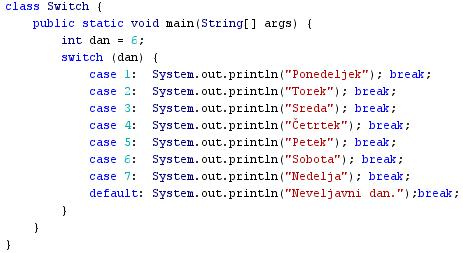
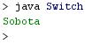

SWITCH
- Stavek "if" omogoèa izvajanje enega želenega stavka ali bloka stavkov v primeru, ko je postavljeni pogoj izpolnjen.
- Stavek "if" omogoèa izvajanje enega želenega stavka ali bloka stavkov v primeru, ko je postavljeni pogoj izpolnjen in drugega želenega stavka ali bloka stavkov v primeru, ko postavljeni pogoj ni izpolnjen.
- Stavek "switch" (preklop) omogoèa izvršitev poljubnega števila želenih stavkov ali blokov stavkov v primeru, ko je eden izmed postavljenih izpolnjen.
- Vsakemu postavljenemu pogoju ustreza želeni stavek ali blok stavkov, ki se izvede, èe je ta izbrani postavljeni pogoj izpolnjen.
- Primer:
class Switch {
public static void main(String[] args) {
int mesec = 8;
switch (mesec) {
case 1: System.out.println("Januar"); break;
case 2: System.out.println("Februar"); break;
case 3: System.out.println("Marec"); break;
case 4: System.out.println("April"); break;
case 5: System.out.println("Maj"); break;
case 6: System.out.println("Junij"); break;
case 7: System.out.println("Julij"); break;
case 8: System.out.println("Avgust"); break;
case 9: System.out.println("September"); break;
case 10: System.out.println("Oktober"); break;
case 11: System.out.println("November"); break;
case 12: System.out.println("December"); break;
default: System.out.println("Neveljavni mesec.");break;
}
}
}
- Telo ukaza "Switch" imenujemo tudi blok switch.
- Vsak stavek, ki ga vsebuje switch blok, je oznaèen z rezervirano besedo "case" (primer) in vrstno številko stavka.
- Vsak stavek "case" je zakljuèen z ukazom "break" (prekinitev).
- Izvajanje programa se po izvršitvi tistega stavka "case" v bloku "switch", katerega vrstna številka ustreza argumentu v klicu stavka "switch", nadaljuje s stavkom, ki sledi bloku "switch".
- V zgornjem primeru je argument v klicu stavka "switch" številka 8 - zato se izvede stavek case 8.
- Èe ukazi "break" ne bi zakljuèevali vseh stavkov case, bi se izvedli tudi vsi ostali stavki "case", ki sledijo tistemu, ki izpolnjuje postavljeni pogoj.
- V zgornjem primeru bi se poeg stavkov številka 8 izvedli še stavki 9, 10, 11, 12 in še "default" (privzeti stavek).
VAJA 21:
- V okolju za pisanje izvorne kode v jeziku Java, za prevajanje in za interaktivno delo zapiši zgornji program "Switch". Pomagaj si s sliko.
- Kodo lahko tudi kopiraš iz te datoteke in jo prilepiš v okolje, v katerem pišeš programèke. Pozor: koda, ki jo boš kopiral/a, vsebuje eno, dve, tri ali štiri napake. Èe želiš, da bo program deloval, moraš napake odkriti in jih odpraviti.
- Izvorno kodo shrani pod imenom "ImePriimek21.java". ImePriimek je seveda tvoje lastno ime in priimek.
- Datoteko "ImePriimek21.java" prevedi.
- Prevedeno datoteko zaženi, preveri rezultat v interaktivnem oknu in poklièi profesorja, da vidi rezultat.
1. Vprašanja:
1. V èem se stavek "switch" bistveno razlikuje od stavkov "if" in "if-then"?
2. Kaj pomeni beseda "switch"?
3. Kaj pomeni beseda "case"?
4. Kaj pomeni beseda "break"?
5. Koliko razliènih potekov izvajanja programa omogoèa stavek "switch" v primeru v besedilu te uène enote?
6. Koliko razliènih potekov izvajanja programa omogoèa stavek "switch" v primeru v vaji te uène enote?
7. Kakšen je rezultat zagona programa v vaji te uène enote? Razloži, zakaj je tak rezultat.
8. Kakšen je rezultat zagona programa v vaji te uène enote, èe prirediš spremenljivki "dan" vrednost 11? Razloži, zakaj je tak rezultat.
9. Kaj moraš storiti, da bo rezultat zagona programa v vaji te uène enote izpis "Ponedeljek"?
10. Kakšen rezultat vrne program v primeru v besedilu te uène enote? Zakaj je tak rezultat?
2. Zapiši od ene do pet kljuènih besed, ki povzemajo vsebino te uène enote.
3. Povezave do dodatnih informacij.
Spletni priroènik proizvajalca programskega okolja Java. To je podjetje Sun.
|